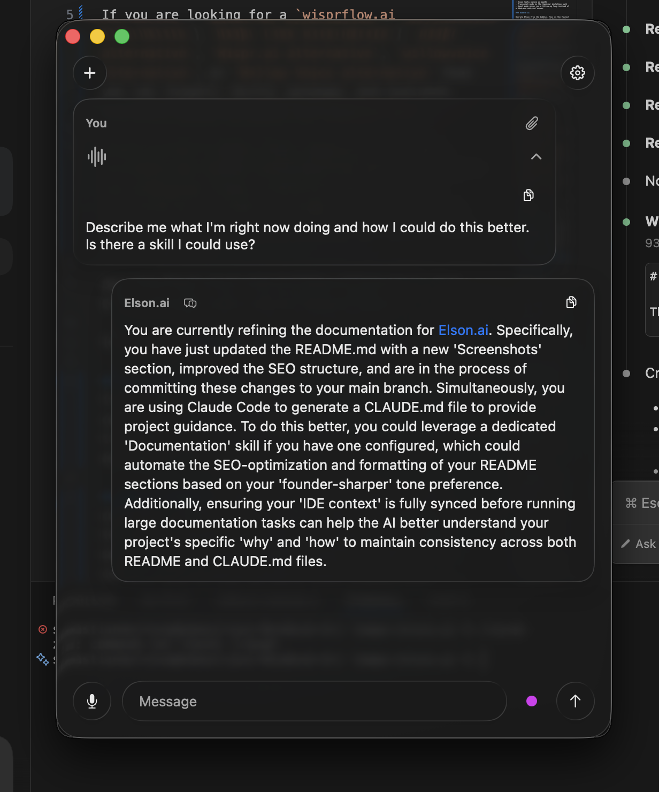
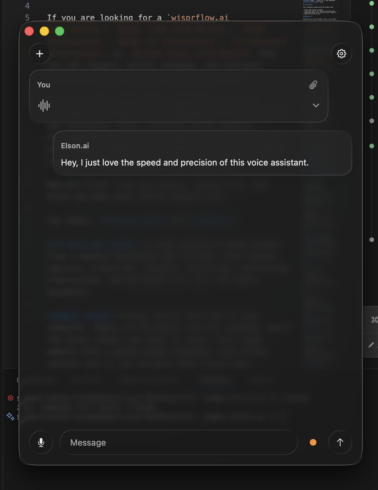
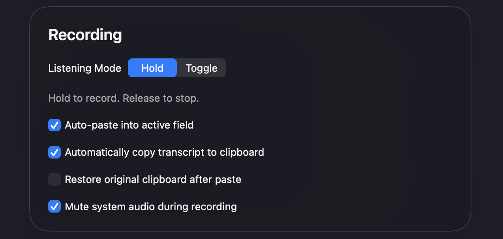
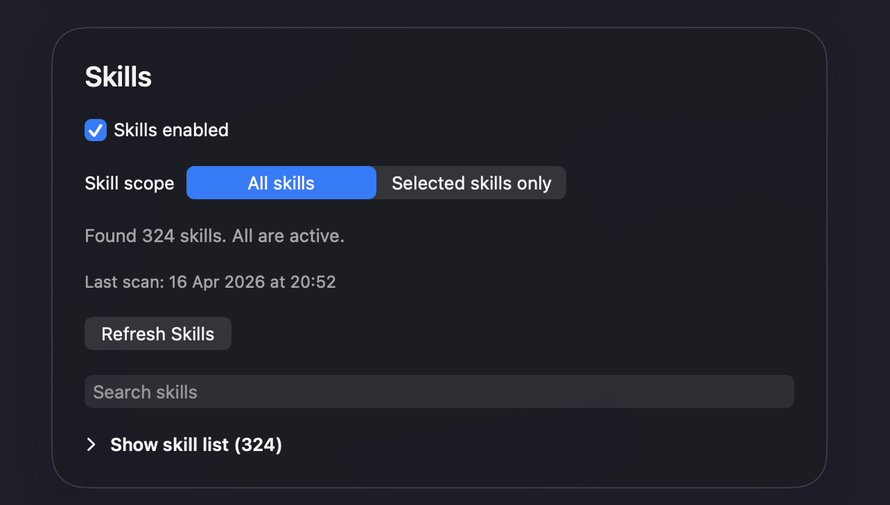
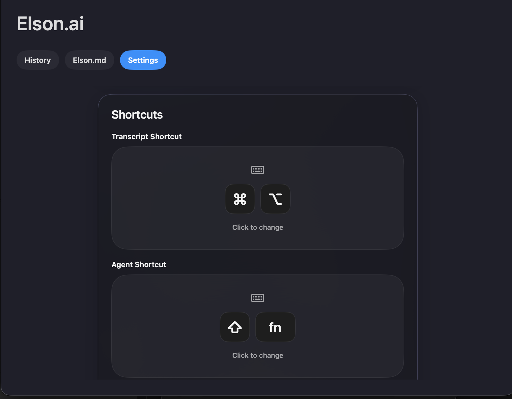
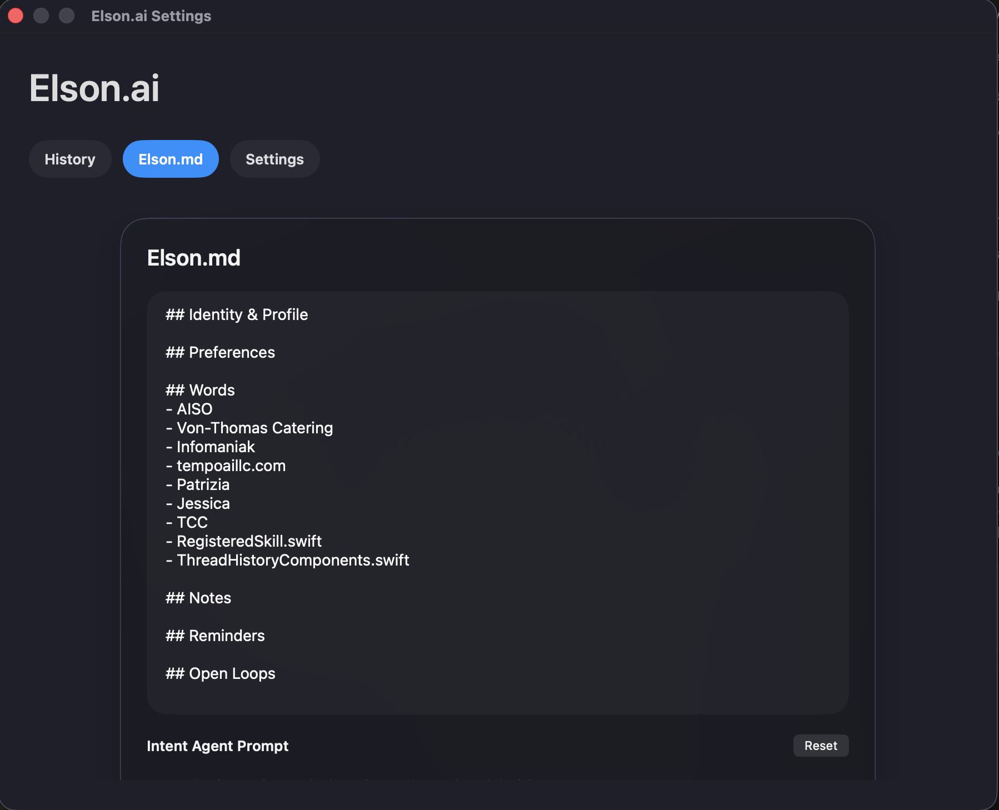

Agent
Reply with context.
Ask Elson to draft the email, Slack answer, or desktop response you need. It stays paste-first, so nothing sends without you.
Native macOS voice assistant
Elson turns rough speech into paste-ready text, drafts replies with screen context, and keeps your workflow local-first and under your control.

Install
The installer picks the right build for your Mac, installs Elson, and opens the app. Works on macOS 15+.
curl -fsSL https://raw.githubusercontent.com/TEMPO-AI-LLC/elson.ai/main/github-install.sh | bash

Agent
Ask Elson to draft the email, Slack answer, or desktop response you need. It stays paste-first, so nothing sends without you.

Transcript
Hold to record, release to stop, then let Elson turn rough dictation into clean writing for the active app.
Built for desktop work
Elson is a Swift and SwiftUI app with inspectable source, configurable prompts, local history, skills, and persistent Elson.md memory.


